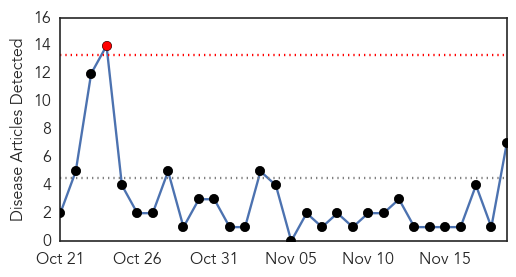
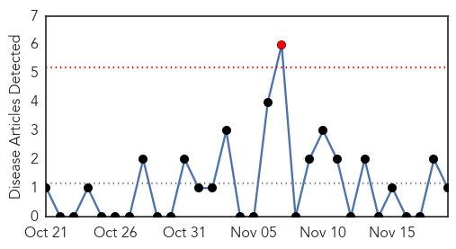
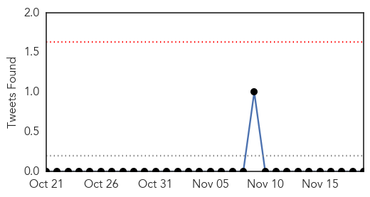

Cholera
30-Day Web Trend
1 alerts, 0 warnings

30-Day Twitter Trend
3 alerts, 0 warnings

Article Locations

Article Confidences

Top Articles:
- 1.000
- Don't Forget Cholera
- 0.997
- Haiti cannot wait 40 years
- 0.886
- Two water contamination deaths: Borewell culprit in Sankheda tragedy
- 0.885
- Ghana, Business Advice, Jobs, News, Business Directory, Real Estate, Finance, Forms, Auto
- 0.677
- GLAAS 2014 Report: Investing in Water and Sanitation: Increasing Access, reducing Inequalities, UN-Water Global Analysis and Assessment of Sanitation and Drinking-Water - World
- 0.632
- UN reveals major gaps in water and sanitation – especially in rural areas
- 0.546
- Two Billion People Use Water Contaminated By Faeces-UN
Top Tweets:
-
No tweets found for Nov 19, 2014
Swine Flu
30-Day Web Trend
1 alerts, 0 warnings

30-Day Twitter Trend
0 alerts, 0 warnings

Article Locations
Article Confidences

Top Articles:
Top Tweets:
-
No tweets found for Nov 19, 2014